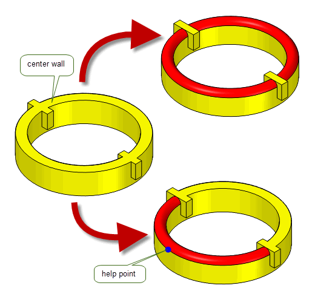

| |
Three-Face Blending |
| <<< Face-Face Blending | Chapters | Interpreting Edge Blending Error Codes >>> |
Parasolid’s support for face-face blending is described in Chapter 78, “Face-Face Blending”. In addition to standard face-face blending, Parasolid lets you create three-face blends (also known as full round fillets), which are blends between three sets of faces.
Figure 79-1 shows a part containing a number of ribs, each of which has a three-face blend along the top.
Figure 79-1 Blending three sets of faces
Three-face blending differs from face-face blending in the following ways:
For an example of this functionality, see the code example in the
C++\Code Examples\Modelling\Blending\3
Face
folder, located in
example_applications
in your Parasolid installation folder.
This chapter consists of the following sections:
|
Note: This functionality does not support facet geometry. |
This section gives you an overview of the important concepts in three-face blending. It describes the main aspects of a three-face blend, and explains how to create one using the PK interface. Three-face blending shares many concepts with face-face blending. Whenever necessary, this chapter refers you to a relevant section in Chapter 78, “Face-Face Blending”.
Figure 79-2 illustrates the components of a general three-face blend.
Figure 79-2 General definition of a three-face blend
The three walls of faces supplied in a three-face blend are referred to as the left, centre, and right walls. For a rolling-ball blend, no guide wire is necessary and the blended surface is the result of rolling a ball along the left, right and centre walls. For a circular disc blend, a guide wire must be given; a blended surface is created that touches each of the three walls tangentially.
The walls can be composed of faces from a combination of solid and sheet bodies, with some limitations, as follows:
In all cases, the centre wall can come from either a sheet or a solid body.
If the left and right walls come from different sheet bodies, their bodies are combined by the blending operation and the body containing the left wall is considered the target body for the operation.
As for face-face blends, three-face blends are defined using a set of cross-sectional planes that are used to determine the exact position where the blended surface touches the blend walls. For disc blends, these cross-sectional planes are defined using a guide wire: see Section 79.3, “Defining the cross-sectional plane”, for information.
Master faces in three-face blending are used in the same way as for face-face blending: that is, the first face in the list that defines a given wall is the master face, and a three-face blend must pass through at least one of the three master faces for the blend to succeed. See Section 78.2.1, “General properties of a face-face blend”, for more information on master faces in face-face blending.
Three-face blends are created using PK_FACE_make_3_face_blend, which receives and returns the following arguments:
n_left_wall_faces left_wall_faces |
The number of faces in the left wall, and an array of those faces. |
n_right_wall_faces right_wall_faces |
The number of faces in the right wall, and an array of those faces. |
n_centre_wall_faces centre_wall_faces |
The number of faces in the centre wall, and an array of those faces. |
guide |
For three-face disc blends, a wire body that defines the cross-sectional planes of the blend. For rolling-ball blends, this argument is not needed and should be set to PK_ENTITY_null. See Section 79.3, “Defining the cross-sectional plane”, for more information. |
options |
A set of options. These are described throughout the rest of this chapter. |
results |
A structure containing the results of the blend operation, including the orientation used for each blend wall, a status code for the operation, and any blended sheets returned together with entities associated with the status in the event that the operation was not successful. |
tracking |
|
Note: When blending faces from different bodies, the faces in the right wall must not come from an instanced body. If they are from an instanced body, PK_ERROR_instance_body is returned. |
As with face-face blends, the cross-sectional planes of a three-face blend are the notional set of planes that pass through the blend surface, and contain the contact points for the blend.
You specify the cross-sectional plane of a three-face blend via the
xsection
field of the options structure. To create a rolling-ball blend,
xsection
should be set to PK_blend_xs_rolling_ball_c. In this case, no guide wire is necessary and
guide
should be set to PK_ENTITY_null. For a circular disc blend,
xsection
should be PK_blend_xs_disc_c (the default value); this choice requires the
guide
argument to be set. The
guide
argument should consist of a manifold, connected wire body that is G1-continuous and contains no tolerant vertices.
Figure 79-3 shows the creation of a rolling-ball blend without the use of a guide wire. Figure 79-4 illustrates how different sets of cross-section profiles can be created using different guide wires. For more details of how to define the cross-sectional plane in a face-face blend, see Section 78.3, “Defining the cross-sectional plane”.
Figure 79-3 Creating a rolling-ball blend without a guide wire
Figure 79-4 Creating different sets of cross-sectional planes using different guides
PK_FACE_make_3_face_blend_o_t contains three options that let you specify the orientation of the blend with respect to each wall. You need to set these options explicitly if the walls you supply come from several different bodies, since Parasolid is unable to determine which side of each wall the blend should lie in this situation.
Figure 79-5 illustrates the effect of setting a different orientation on the centre wall of a three-face blend.
Figure 79-5 Blends created by setting different orientations
If the walls you supply all come from the same body, and the orientation of each wall is PK_blend_orientation_unknown_c (the default), PK_FACE_make_3_face_blend attempts to determine which side of the walls the blend lies based on the configuration of the supplied walls.
If the walls you supply all come from the same body, you should ensure that the orientation of each wall is the same.
|
Note: If you attempt to create a three-face blend from walls that come from different bodies and do not set the orientation options appropriately, the three-face blend will fail. |
PK_FACE_make_3_face_blend returns the orientation used by a blend in the
results
structure. You can examine these return values to determine what orientation Parasolid has used for a given blend.
PK_FACE_make_3_face_blend contains two optional controls for specifying how tolerances are used in three-face blends:
blend_tolerance
option in PK_FACE_make_3_face_blend_o_t. All blend surfaces are then constructed to that tolerance. The default is 1.0e-5.As with face-face blends, three-face blends can propagate to adjoining faces in a body. This allows you to specify just the master face for each wall, leaving Parasolid to propagate the blend as far as possible. The extent to which a blend can propagate depends on both the configuration of the faces you are blending, and the options you have specified, as described in this section.
Three-face blends can automatically propagate across sharp edges between the supplied centre wall faces. Figure 79-6 shows some simple examples showing three-face blends that have propagated across the centre wall (shown in red), despite the centre wall having a sharp edge.
Figure 79-6 Propagating across sharp edges in the centre wall
In addition, three-face blends can propagate across smooth edges between the supplied side wall faces, or onto any face not explicitly supplied as a wall. You can switch this behaviour on or off, and control what Parasolid considers to be a smooth edge, using the following options:
propagate |
Whether or not PK_FACE_make_3_face_blend should propagate the blend across suitably smooth adjoining edges. The default is to propagate whenever possible. |
propagation_tolerance |
An angular tolerance (in radians) that PK_FACE_make_3_face_blend uses to determine whether adjoining edges are smooth enough to be able to propagate across. Default: 0.05 |
have_propagation_tolerance |
Whether or not a |
Once a three-face blend has been created, it needs to be trimmed appropriately to any surrounding geometry. Parasolid supports:
The functionality Parasolid offers for trimming three-face blends is very similar to the functionality it offers for trimming face-face blends; you should refer to Section 78.6, “Trimming face-face blends”, for additional information.
Figure 79-7 Trimming blend faces and blend walls
You need to specify how blend faces should be trimmed to the boundaries of the blend walls. This is done using the
trim
option (PK_blend_trim_t) in PK_FACE_make_3_face_blend_o_t. This option takes the same values as the
trim
option in PK_FACE_make_blend_o_t, as described in Section 78.6.1.
Figure 79-8 shows the effect that the
trim
option has when creating a three-face blend between three sheet bodies.
Figure 79-8 Trimming blend faces to the body
When trimming blend faces to the body, you might sometimes find it useful to ignore the centre wall used to create the blend. For example, if your application creates three-face blends by introducing an artificial sheet as a centre wall, rather than by choosing three faces from the same body (as shown in Figure 79-9), then you never need to consider the centre wall when trimming the resultant blend.
Figure 79-9 Introducing an artificial sheet as the centre wall in a three-face blend
If this is the case, you can use the
trim_extent
option to specify that the blend should only be trimmed with respect to the extent of the left and right walls. This option takes the following values:
|
Include the centre wall when trimming the blend. This is the default. |
|
|
Ignore the centre wall when trimming the belnd. The blend will only be trimmed to the side walls, with further control provided by the value of
You should not use this value if |
Figure 79-10 shows the effect of changing the value of
trim_extent
when
trim
is PK_blend_trim_long_c and the centre wall is the largest of the three walls specified.
Figure 79-10 Ignoring the centre wall when trimming three-face blends
Note: If the centre wall comes from a different body, and
trim
is PK_blend_trim_to_walls_c, then the value of
trim_extent
is ignored. The result is as if
trim_extent
was PK_blend_trim_extent_sides_c |
Like face-face blending, you can specify whether the left and right walls of a three-face blend should be trimmed back to where they meet the blend face, and whether the blend should itself be attached to the walls. You can do this using the
walls
option.
You can set
walls
to any of the values described in Section 78.6.2, “Trimming blend walls and returning the body”. The left and right walls are trimmed to the blend face for all values of
walls
except PK_blend_walls_trim_no_c, as shown in
Figure 79-11.
Figure 79-11 Trimming walls to blend faces
If
walls
is either PK_blend_walls_attach_c or PK_blend_walls_trim_solid_c, the blend is also attached to the walls. It is not attached for the other values. The additional behaviour for each of value of
walls
is as documented in Section 78.6.2.
Because of the nature of three-face blending, the centre wall cannot be trimmed. It is therefore destroyed if
walls
is either PK_blend_walls_trim_both_c or PK_blend_walls_attach_c, and the centre is already attached to either of the other walls. It remains untouched otherwise.
As for PK_FACE_make_blend, if the blend is returned as a separate sheet body then PK_FACE_make_3_face_blend can create this body in a separate partition that you specify in the
partition
field of the options structure.
Note: If PK_FACE_make_3_face_blend returns PK_3_face_blend_sheet_c, the blending operation was only partially successful and the new faces will be returned as a sheet body
regardless of the value of
walls
. If
partition
is set to a non-default value, the specified partition will be used to hold the new sheet body. |
Parasolid can trim a three-face blend to a specified limiting entity: either a plane, face, or fin. If the blend intersects the limiting entity, it is trimmed so that it ends in a constant parameter line determined by the entity.
You use the
n_limits
and
limits
options to specify limiting entities.
guide
is used. If the blend intersects a limit plane at more than one point, it is trimmed at the intersection closest to the plane’s location vector (i.e the
location
field from the
basis_set
in the definition of the plane returned by PK_PLANE_ask). Figure 79-12 Trimming a blend to a limit plane
For more information about this functionality, see the description of the equivalent functionality for face blending, in Section 78.6.3, “Trimming the blend to a plane”.
Note: In the
tracking
structure returned by PK_FACE_make_3_face_blend, any cap faces created are tracked to fins if you have explicitly specified fins in the
limits
array, and the cap face has arisen from using them to trim the blend. Otherwise, edges are used instead. |
As with face-blending, you can use the
caps
,
n_caps
, and
reverse_cap
options to specify a list of faces or planes with which to trim a three-face blend. If capping faces are supplied, they must come from the same body as the three-face blend.
Figure 79-13 shows a simple example in which a three-face blend can be successfully created by trimming it using one of the faces of the body itself.
Figure 79-13 Trimming a three-face blend using a capping face
Unlike limiting entities, which trim to a constant parameter line in the blend face, capping faces and planes trim the blend along the line of intersection between the blend and the supplied cap. Figure 79-14 illustrates how, by using the same original body and plane as the example in Figure 79-12, a different result can be obtained by using the plane as a capping plane rather than a limiting plane.
Figure 79-14 Trimming a blend to a capping plane
If a blend intersects a capping plane at more than one point, it is trimmed at the intersection closest to the origin of the plane.
For more information about this functionality, see the description of the equivalent functionality for face blending, in Section 78.6.5, “Trimming the blend using capping faces or planes”.
If the data you pass to PK_FACE_make_3_face_blend is ambiguous, it can sometimes be possible to create more than one set of blend faces. Sometimes, you may want to create all possible blends defined by an ambiguous set of walls, but at other times you may only want to create one blend. The following options let you control which blend is created in cases where the walls specified are ambiguous:
The different results that can be created depending on whether you supply a help point are shown in Figure 79-15. Here, two blends are created by default, but supplying the help point shown can limit the result to just a single blend.
Figure 79-15 Creating multiple and single solutions when supplying ambiguous data
|
Note: When dealing with multiple solutions, PK_FACE_make_3_face_blend has a different default behaviour to PK_FACE_make_blend. If no help point information is specified, PK_FACE_make_3_face_blend looks for multiple solutions, but PK_FACE_make_blend creates only a single solution (and does not guarantee which of the available solutions will be produced). |
To help ensure validity of the resulting body, Parasolid checks for face-face inconsistencies when creating three-face blends. You can turn this behaviour off using the
check_fa_fa
option. See Section 31.4.1, “Face-face checks”, for more information about face-face checking.
Parasolid can attempt to repair any self-intersecting blend faces created after a call to PK_FACE_make_3_face_blend; this is similar to the repairing done after local operations such as offsetting and tapering. The
repair_fa_X
field of the options structure is used to specify whether Parasolid should attempt to repair self-intersecting blend faces.
|
|
Figure 79-16 shows an example of a blend operation that can be completed successfully by setting
repair_fa_X
to PK_blend_repair_fa_X_yes_c. If
repair_fa_X
is set to PK_blend_repair_fa_X_no_c, the operation fails.
|
Note: This self-intersection repair applies to faces only; Parasolid does not attempt to repair any self-intersecting surfaces created after a call to PK_FACE_make_3_face_blend. |
Figure 79-16 Successful blend with
repair_fa_X
set to PK_blend_repair_fa_X_yes_c
When creating blends as, or on, sheet bodies, you can use the
track_edges
option to track the laminar edges of a blend back to the entities that they were created from. This option is identical to the
track_edges
option in face-face blending: see Section 78.17, “Tracking laminar edgesDOC1165”, for more information.
If your application uses models created using earlier versions of Parasolid, you can use the
update
option to help eliminate differences in rebuild results. This option is identical to the
update
option in face-face blending: see Section 78.19, “Update control”, for more information.
In summary, Parasolid provides functionality to create a rolling-ball or circular disc blend across three walls of faces; the faces must come either from a single solid body or from up to three separate sheet bodies.
Three-face blending functionality is provided via PK_FACE_make_3_face_blend. This contains optional controls to:
| <<< Face-Face Blending | Chapters | Interpreting Edge Blending Error Codes >>> |